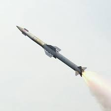

About APJ Abdulkalam
APJ Abdul kalam (born oct 15,1931,rameswaram,india- died july 27,2015,shillog)Indian scientist and polition who played aleading role in the development of indias missile and nuclear weapons programs.He was president of india from 2002 to 2007.
About missile man of india
Rejoining DRDO in 1982, Kalam planned the program that produced a number of successful missiles, which helped earn him the nickname “Missile Man ...
